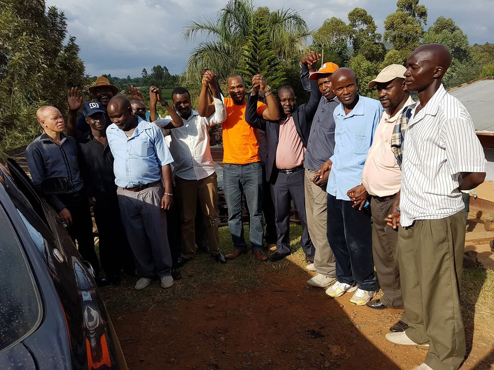

[Erick Janganya, full public name]
I am Erick Janganya, an aspiring Member of Parliament for Embakasi South, based in Nairobi, and I'm running to represent Embakasi South in the 2027 general election because [placeholder: the core reason, in his own words].

The Journey
From campus to a second run at Embakasi South
[One framing sentence introducing the storyline, e.g. what shaped the decision to run.]
Campus
[He/I] studied [field of study] at the University of Nairobi: [one line on what shaped him there].
Career Path
[Role/title at organization after campus: one line on what that work involved and what it revealed about Embakasi South's needs.]
2022 Campaign
Erick ran as an independent candidate for the Embakasi South parliamentary seat, placing second with 17,917 votes (21.81%) behind Julius Mawathe of WDM-K.
Foundation
In [year], Erick founded the Erick Janganya Foundation, to track every promise, verify every claim, and keep Embakasi South's progress open for anyone to check.

2026 – 20272027 Campaign
Erick is running for Embakasi South a second time, bringing the same standard of accountability built into the foundation's tracker to the office itself.
Why I'm Running
The record has to be honest first
Three things this campaign comes down to.
A pattern, not a lack of ideas
A borehole promised at a rally, never dug. A road resurfaced only where the cameras could see it. A youth fund announced, never disbursed. The problem was never short on ideas. It was that nobody checked whether they became real.
The same standard, applied to me
That's the gap the foundation exists to close: every project and promise made to this constituency, dated and open to verify, whether or not I made it. This campaign is the next step of that work, not a departure from it.
What I'm asking for
Not another name promising it'll be different this time. A representative willing to be checked the same way everyone else already is on this site. That's the only thing I'm asking the chance to be.
What Guides This
Four things that don't move
Transparency
Every project and promise carries a date, a budget line, and a status, with nothing claimed without proof attached.
Accountability
Progress is measured against what was actually promised, not against what's convenient to say afterward.
Presence
Imara Daima, Kwa Njenga, Kwa Reuben, Pipeline, and Kware: tracked individually, not blurred into one average.
Continuity
The record doesn't reset on election day. Whatever happens in 2027, the tracker keeps running.
In His Words
Vision for the constituency
Economy & Jobs
[Erick's specific position and plan for economy and employment in Embakasi South.]
Health & Sanitation
[Erick's specific position and plan for health and sanitation in Embakasi South.]
Education & Youth
[Erick's specific position and plan for education and youth in Embakasi South.]
Explore Further
The rest of the record
Erick's story is one part of a connected site: see the foundation's approach, the vision behind it, and what residents are saying.
The Foundation
The principles and focus areas behind every project on the tracker.
See the approachThe Vision
What Erick is prioritising for Embakasi South, beyond the election, and beyond the constituency's own borders.
Read the visionCommunity
Voices from Embakasi South residents on what's working and what isn't.
Hear from residentsA leader who cannot be checked cannot be trusted. So check me: every promise dated, every project budgeted, every claim left open for anyone in Embakasi South to verify.
See the record behind the story
Every claim made on this page is checkable against the same tracker as everything else.